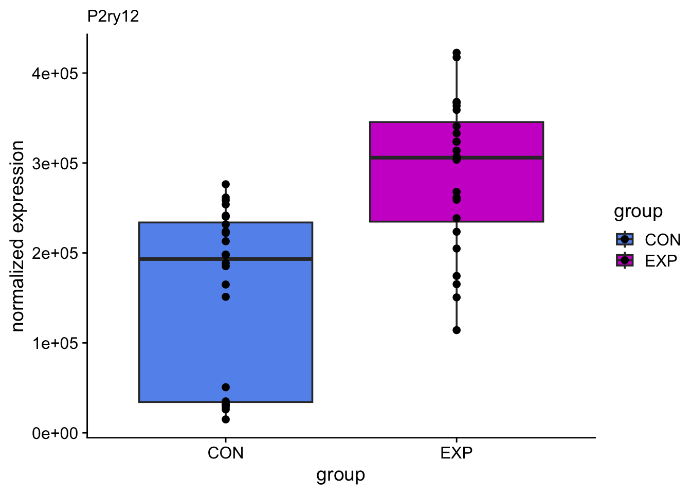
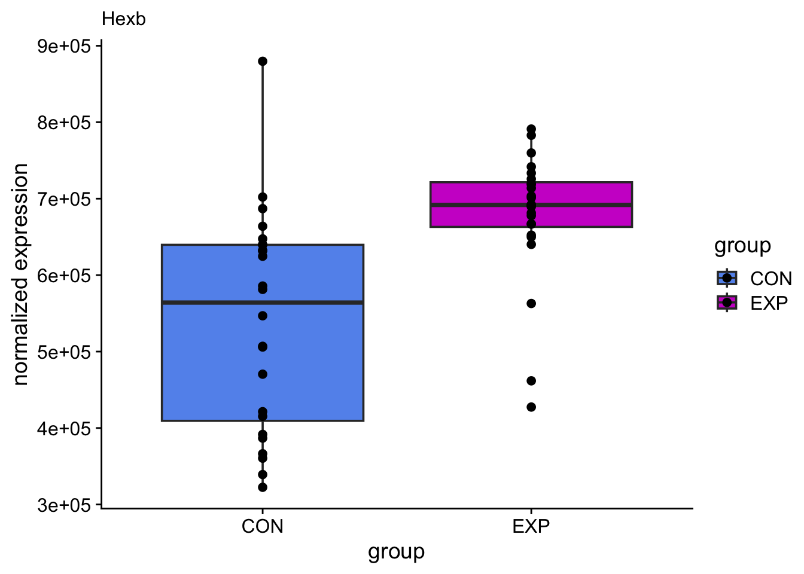
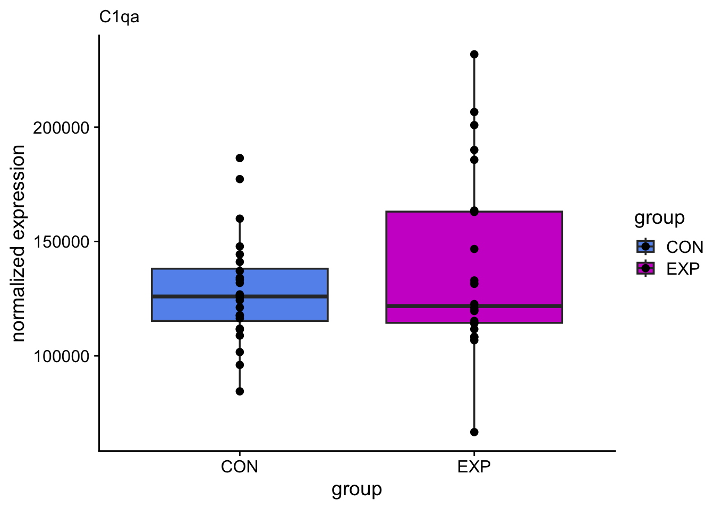
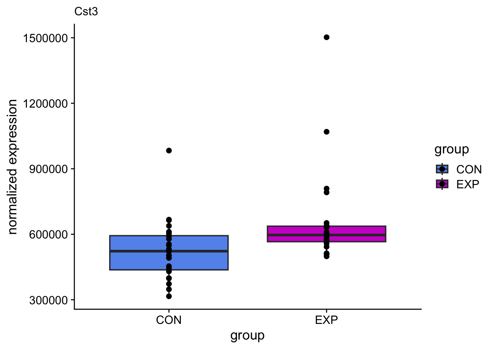
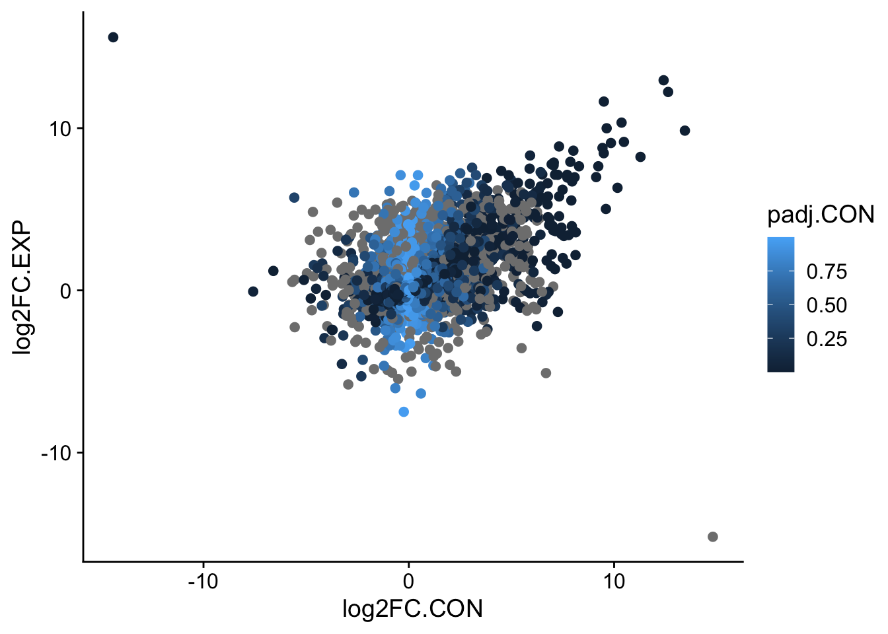
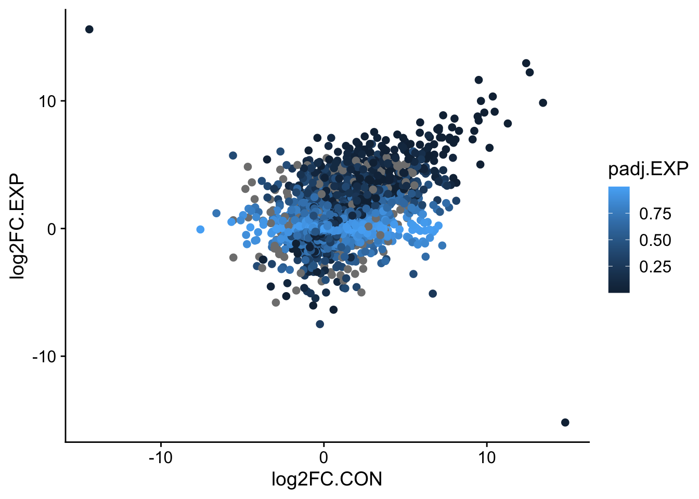
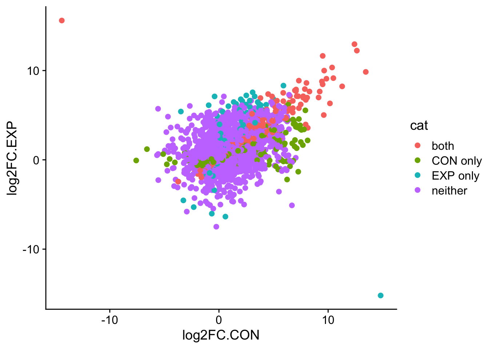
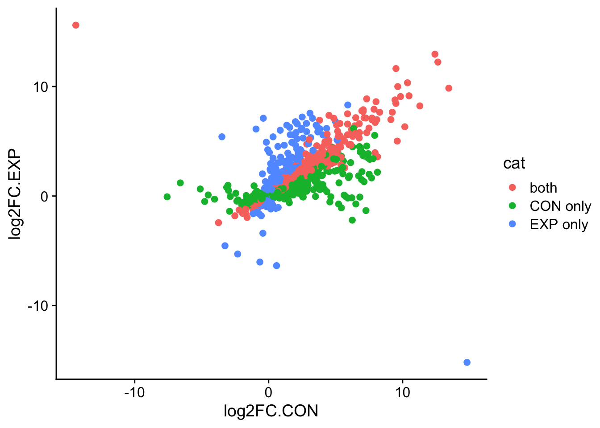

library(tidyverse)
library(cowplot)
library(palmerpenguins)
library(taylor)Iterations and Conditional Statements
About the activity
Access the Quarto document.
Download the quarto file and data files. here
Open it in RStudio.
Check your working directory!
We will work our way through this quarto document together during class. The activity will cover writing and evaluating different types of iterative loops.
Load the Packages
The tidyverse library includes ggplot2 and I added cowplot to make the plots prettier. We will use data from the palmerpenguins and the taylor packages.
Looping Plots
## Load Sample Data
norm.counts <- read.csv("norm.counts.csv", row.names = 1)
norm.counts[1:5,1:10] MA01 MA02 MA03 MA04 MA05 MA06
0610005C13Rik 0.00000 0.000000 1.490984 0.00000 8.958237 8.644648
0610009B22Rik 711.79739 1128.370079 545.172232 657.00195 483.477864 704.040018
0610009E02Rik 11.22142 3.121206 0.000000 0.00000 29.754923 18.953182
0610009L18Rik 61.81119 26.001512 32.207597 15.02679 16.246837 34.932658
0610010F05Rik 790.92106 331.750066 475.831510 569.68964 624.273693 758.372701
MA07 MA08 MA09 MA10
0610005C13Rik 28.926779 13.48451 5.552999 0.00000
0610009B22Rik 505.634009 546.98379 485.556896 356.00185
0610009E02Rik 8.946166 28.23301 3.504441 0.00000
0610009L18Rik 26.813689 35.67460 8.115345 40.97362
0610010F05Rik 704.615256 652.36907 1223.516177 841.63074## Generate Plot Loop
goi <- c("P2ry12", "Hexb", "C1qa", "Cst3")
for (i in goi){
pgene = which(row.names(norm.counts) == i)
exp <- as.numeric(t(norm.counts[pgene,]))
group <- as.character(rep(c("CON", "EXP"), each = 24))
df <- data.frame(group, exp)
p <- ggplot(df, aes(x = group, y = exp, fill = group)) + geom_boxplot() + geom_point() +
scale_fill_manual(values = c("cornflowerblue", "magenta3")) +
theme_cowplot() +
labs(subtitle = i) + ylab("normalized expression")
print(p)
#ggsave(filename=paste("plots/", i,".jpeg", sep = ""), width = 80, height = 80, units = "mm")
}



try it with some other genes of your interest, try saving the outputs
Read in a lot of files to generate a master dataframe
total_files=list.files("data_files/")
total_files[1] "21-1_2_100x_HPC1_CA1_c1_Detailed.csv.trim.csv"
[2] "21-1_2_100x_HPC1_DG1_c1_Detailed.csv.trim.csv"
[3] "21-1_2_100x_HPC2_CA2_c1_Detailed.csv.trim.csv"
[4] "21-1_2_100x_HPC2_CA2_c2_Detailed.csv.trim.csv"
[5] "21-1_2_100x_HPC2_DG2_c1_Detailed.csv.trim.csv"df<-read.csv(paste0("data_files/", total_files[1]), header = FALSE)
for(i in 2:length(total_files)){
tmp <- read.csv(paste0("data_files/", total_files[i]), header=FALSE)
df <- rbind(df, tmp)
print(i)
}[1] 2
[1] 3
[1] 4
[1] 5colnames(df) <- c("filename","no.intersections","radius.um","x")
df filename
1 ./240715_MG/21-01-02/Imaris/21-1-2_100x_HPC1_CA1_c1_Statistics/21-1_2_100x_HPC1_CA1_c1_Detailed.csv
2 ./240715_MG/21-01-02/Imaris/21-1-2_100x_HPC1_CA1_c1_Statistics/21-1_2_100x_HPC1_CA1_c1_Detailed.csv
3 ./240715_MG/21-01-02/Imaris/21-1-2_100x_HPC1_CA1_c1_Statistics/21-1_2_100x_HPC1_CA1_c1_Detailed.csv
4 ./240715_MG/21-01-02/Imaris/21-1-2_100x_HPC1_CA1_c1_Statistics/21-1_2_100x_HPC1_CA1_c1_Detailed.csv
5 ./240715_MG/21-01-02/Imaris/21-1-2_100x_HPC1_CA1_c1_Statistics/21-1_2_100x_HPC1_CA1_c1_Detailed.csv
6 ./240715_MG/21-01-02/Imaris/21-1-2_100x_HPC1_CA1_c1_Statistics/21-1_2_100x_HPC1_CA1_c1_Detailed.csv
7 ./240715_MG/21-01-02/Imaris/21-1-2_100x_HPC1_CA1_c1_Statistics/21-1_2_100x_HPC1_CA1_c1_Detailed.csv
8 ./240715_MG/21-01-02/Imaris/21-1-2_100x_HPC1_CA1_c1_Statistics/21-1_2_100x_HPC1_CA1_c1_Detailed.csv
9 ./240715_MG/21-01-02/Imaris/21-1-2_100x_HPC1_CA1_c1_Statistics/21-1_2_100x_HPC1_CA1_c1_Detailed.csv
10 ./240715_MG/21-01-02/Imaris/21-1-2_100x_HPC1_CA1_c1_Statistics/21-1_2_100x_HPC1_CA1_c1_Detailed.csv
11 ./240715_MG/21-01-02/Imaris/21-1-2_100x_HPC1_CA1_c1_Statistics/21-1_2_100x_HPC1_CA1_c1_Detailed.csv
12 ./240715_MG/21-01-02/Imaris/21-1-2_100x_HPC1_CA1_c1_Statistics/21-1_2_100x_HPC1_CA1_c1_Detailed.csv
13 ./240715_MG/21-01-02/Imaris/21-1-2_100x_HPC1_CA1_c1_Statistics/21-1_2_100x_HPC1_CA1_c1_Detailed.csv
14 ./240715_MG/21-01-02/Imaris/21-1-2_100x_HPC1_CA1_c1_Statistics/21-1_2_100x_HPC1_CA1_c1_Detailed.csv
15 ./240715_MG/21-01-02/Imaris/21-1-2_100x_HPC1_CA1_c1_Statistics/21-1_2_100x_HPC1_CA1_c1_Detailed.csv
16 ./240715_MG/21-01-02/Imaris/21-1-2_100x_HPC1_CA1_c1_Statistics/21-1_2_100x_HPC1_CA1_c1_Detailed.csv
17 ./240715_MG/21-01-02/Imaris/21-1-2_100x_HPC1_CA1_c1_Statistics/21-1_2_100x_HPC1_CA1_c1_Detailed.csv
18 ./240715_MG/21-01-02/Imaris/21-1-2_100x_HPC1_CA1_c1_Statistics/21-1_2_100x_HPC1_CA1_c1_Detailed.csv
19 ./240715_MG/21-01-02/Imaris/21-1-2_100x_HPC1_CA1_c1_Statistics/21-1_2_100x_HPC1_CA1_c1_Detailed.csv
20 ./240715_MG/21-01-02/Imaris/21-1-2_100x_HPC1_CA1_c1_Statistics/21-1_2_100x_HPC1_CA1_c1_Detailed.csv
21 ./240715_MG/21-01-02/Imaris/21-1-2_100x_HPC1_CA1_c1_Statistics/21-1_2_100x_HPC1_CA1_c1_Detailed.csv
22 ./240715_MG/21-01-02/Imaris/21-1-2_100x_HPC1_CA1_c1_Statistics/21-1_2_100x_HPC1_CA1_c1_Detailed.csv
23 ./240715_MG/21-01-02/Imaris/21-1-2_100x_HPC1_CA1_c1_Statistics/21-1_2_100x_HPC1_CA1_c1_Detailed.csv
24 ./240715_MG/21-01-02/Imaris/21-1-2_100x_HPC1_CA1_c1_Statistics/21-1_2_100x_HPC1_CA1_c1_Detailed.csv
25 ./240715_MG/21-01-02/Imaris/21-1-2_100x_HPC1_CA1_c1_Statistics/21-1_2_100x_HPC1_CA1_c1_Detailed.csv
26 ./240715_MG/21-01-02/Imaris/21-1-2_100x_HPC1_CA1_c1_Statistics/21-1_2_100x_HPC1_CA1_c1_Detailed.csv
27 ./240715_MG/21-01-02/Imaris/21-1-2_100x_HPC1_CA1_c1_Statistics/21-1_2_100x_HPC1_CA1_c1_Detailed.csv
28 ./240715_MG/21-01-02/Imaris/21-1-2_100x_HPC1_CA1_c1_Statistics/21-1_2_100x_HPC1_CA1_c1_Detailed.csv
29 ./240715_MG/21-01-02/Imaris/21-1-2_100x_HPC1_CA1_c1_Statistics/21-1_2_100x_HPC1_CA1_c1_Detailed.csv
30 ./240715_MG/21-01-02/Imaris/21-1-2_100x_HPC1_CA1_c1_Statistics/21-1_2_100x_HPC1_CA1_c1_Detailed.csv
31 ./240715_MG/21-01-02/Imaris/21-1-2_100x_HPC1_CA1_c1_Statistics/21-1_2_100x_HPC1_CA1_c1_Detailed.csv
32 ./240715_MG/21-01-02/Imaris/21-1-2_100x_HPC1_CA1_c1_Statistics/21-1_2_100x_HPC1_CA1_c1_Detailed.csv
33 ./240715_MG/21-01-02/Imaris/21-1-2_100x_HPC1_CA1_c1_Statistics/21-1_2_100x_HPC1_CA1_c1_Detailed.csv
34 ./240715_MG/21-01-02/Imaris/21-1-2_100x_HPC1_CA1_c1_Statistics/21-1_2_100x_HPC1_CA1_c1_Detailed.csv
35 ./240715_MG/21-01-02/Imaris/21-1-2_100x_HPC1_CA1_c1_Statistics/21-1_2_100x_HPC1_CA1_c1_Detailed.csv
36 ./240715_MG/21-01-02/Imaris/21-1-2_100x_HPC1_CA1_c1_Statistics/21-1_2_100x_HPC1_CA1_c1_Detailed.csv
37 ./240715_MG/21-01-02/Imaris/21-1-2_100x_HPC1_CA1_c1_Statistics/21-1_2_100x_HPC1_CA1_c1_Detailed.csv
38 ./240715_MG/21-01-02/Imaris/21-1-2_100x_HPC1_CA1_c1_Statistics/21-1_2_100x_HPC1_CA1_c1_Detailed.csv
39 ./240715_MG/21-01-02/Imaris/21-1-2_100x_HPC1_CA1_c1_Statistics/21-1_2_100x_HPC1_CA1_c1_Detailed.csv
40 ./240715_MG/21-01-02/Imaris/21-1-2_100x_HPC1_DG1_c1_Statistics/21-1_2_100x_HPC1_DG1_c1_Detailed.csv
41 ./240715_MG/21-01-02/Imaris/21-1-2_100x_HPC1_DG1_c1_Statistics/21-1_2_100x_HPC1_DG1_c1_Detailed.csv
42 ./240715_MG/21-01-02/Imaris/21-1-2_100x_HPC1_DG1_c1_Statistics/21-1_2_100x_HPC1_DG1_c1_Detailed.csv
43 ./240715_MG/21-01-02/Imaris/21-1-2_100x_HPC1_DG1_c1_Statistics/21-1_2_100x_HPC1_DG1_c1_Detailed.csv
44 ./240715_MG/21-01-02/Imaris/21-1-2_100x_HPC1_DG1_c1_Statistics/21-1_2_100x_HPC1_DG1_c1_Detailed.csv
45 ./240715_MG/21-01-02/Imaris/21-1-2_100x_HPC1_DG1_c1_Statistics/21-1_2_100x_HPC1_DG1_c1_Detailed.csv
46 ./240715_MG/21-01-02/Imaris/21-1-2_100x_HPC1_DG1_c1_Statistics/21-1_2_100x_HPC1_DG1_c1_Detailed.csv
47 ./240715_MG/21-01-02/Imaris/21-1-2_100x_HPC1_DG1_c1_Statistics/21-1_2_100x_HPC1_DG1_c1_Detailed.csv
48 ./240715_MG/21-01-02/Imaris/21-1-2_100x_HPC1_DG1_c1_Statistics/21-1_2_100x_HPC1_DG1_c1_Detailed.csv
49 ./240715_MG/21-01-02/Imaris/21-1-2_100x_HPC1_DG1_c1_Statistics/21-1_2_100x_HPC1_DG1_c1_Detailed.csv
50 ./240715_MG/21-01-02/Imaris/21-1-2_100x_HPC1_DG1_c1_Statistics/21-1_2_100x_HPC1_DG1_c1_Detailed.csv
51 ./240715_MG/21-01-02/Imaris/21-1-2_100x_HPC1_DG1_c1_Statistics/21-1_2_100x_HPC1_DG1_c1_Detailed.csv
52 ./240715_MG/21-01-02/Imaris/21-1-2_100x_HPC1_DG1_c1_Statistics/21-1_2_100x_HPC1_DG1_c1_Detailed.csv
53 ./240715_MG/21-01-02/Imaris/21-1-2_100x_HPC1_DG1_c1_Statistics/21-1_2_100x_HPC1_DG1_c1_Detailed.csv
54 ./240715_MG/21-01-02/Imaris/21-1-2_100x_HPC1_DG1_c1_Statistics/21-1_2_100x_HPC1_DG1_c1_Detailed.csv
55 ./240715_MG/21-01-02/Imaris/21-1-2_100x_HPC1_DG1_c1_Statistics/21-1_2_100x_HPC1_DG1_c1_Detailed.csv
56 ./240715_MG/21-01-02/Imaris/21-1-2_100x_HPC1_DG1_c1_Statistics/21-1_2_100x_HPC1_DG1_c1_Detailed.csv
57 ./240715_MG/21-01-02/Imaris/21-1-2_100x_HPC1_DG1_c1_Statistics/21-1_2_100x_HPC1_DG1_c1_Detailed.csv
58 ./240715_MG/21-01-02/Imaris/21-1-2_100x_HPC1_DG1_c1_Statistics/21-1_2_100x_HPC1_DG1_c1_Detailed.csv
59 ./240715_MG/21-01-02/Imaris/21-1-2_100x_HPC1_DG1_c1_Statistics/21-1_2_100x_HPC1_DG1_c1_Detailed.csv
60 ./240715_MG/21-01-02/Imaris/21-1-2_100x_HPC1_DG1_c1_Statistics/21-1_2_100x_HPC1_DG1_c1_Detailed.csv
61 ./240715_MG/21-01-02/Imaris/21-1-2_100x_HPC1_DG1_c1_Statistics/21-1_2_100x_HPC1_DG1_c1_Detailed.csv
62 ./240715_MG/21-01-02/Imaris/21-1-2_100x_HPC1_DG1_c1_Statistics/21-1_2_100x_HPC1_DG1_c1_Detailed.csv
63 ./240715_MG/21-01-02/Imaris/21-1-2_100x_HPC1_DG1_c1_Statistics/21-1_2_100x_HPC1_DG1_c1_Detailed.csv
64 ./240715_MG/21-01-02/Imaris/21-1-2_100x_HPC1_DG1_c1_Statistics/21-1_2_100x_HPC1_DG1_c1_Detailed.csv
65 ./240715_MG/21-01-02/Imaris/21-1-2_100x_HPC1_DG1_c1_Statistics/21-1_2_100x_HPC1_DG1_c1_Detailed.csv
66 ./240715_MG/21-01-02/Imaris/21-1-2_100x_HPC1_DG1_c1_Statistics/21-1_2_100x_HPC1_DG1_c1_Detailed.csv
67 ./240715_MG/21-01-02/Imaris/21-1-2_100x_HPC1_DG1_c1_Statistics/21-1_2_100x_HPC1_DG1_c1_Detailed.csv
68 ./240715_MG/21-01-02/Imaris/21-1-2_100x_HPC1_DG1_c1_Statistics/21-1_2_100x_HPC1_DG1_c1_Detailed.csv
69 ./240715_MG/21-01-02/Imaris/21-1-2_100x_HPC1_DG1_c1_Statistics/21-1_2_100x_HPC1_DG1_c1_Detailed.csv
70 ./240715_MG/21-01-02/Imaris/21-1-2_100x_HPC1_DG1_c1_Statistics/21-1_2_100x_HPC1_DG1_c1_Detailed.csv
71 ./240715_MG/21-01-02/Imaris/21-1-2_100x_HPC1_DG1_c1_Statistics/21-1_2_100x_HPC1_DG1_c1_Detailed.csv
72 ./240715_MG/21-01-02/Imaris/21-1-2_100x_HPC1_DG1_c1_Statistics/21-1_2_100x_HPC1_DG1_c1_Detailed.csv
73 ./240715_MG/21-01-02/Imaris/21-1-2_100x_HPC1_DG1_c1_Statistics/21-1_2_100x_HPC1_DG1_c1_Detailed.csv
74 ./240715_MG/21-01-02/Imaris/21-1-2_100x_HPC1_DG1_c1_Statistics/21-1_2_100x_HPC1_DG1_c1_Detailed.csv
75 ./240715_MG/21-01-02/Imaris/21-1-2_100x_HPC1_DG1_c1_Statistics/21-1_2_100x_HPC1_DG1_c1_Detailed.csv
76 ./240715_MG/21-01-02/Imaris/21-1-2_100x_HPC1_DG1_c1_Statistics/21-1_2_100x_HPC1_DG1_c1_Detailed.csv
77 ./240715_MG/21-01-02/Imaris/21-1-2_100x_HPC1_DG1_c1_Statistics/21-1_2_100x_HPC1_DG1_c1_Detailed.csv
78 ./240715_MG/21-01-02/Imaris/21-1-2_100x_HPC1_DG1_c1_Statistics/21-1_2_100x_HPC1_DG1_c1_Detailed.csv
79 ./240715_MG/21-01-02/Imaris/21-1-2_100x_HPC1_DG1_c1_Statistics/21-1_2_100x_HPC1_DG1_c1_Detailed.csv
80 ./240715_MG/21-01-02/Imaris/21-1-2_100x_HPC1_DG1_c1_Statistics/21-1_2_100x_HPC1_DG1_c1_Detailed.csv
81 ./240715_MG/21-01-02/Imaris/21-1-2_100x_HPC1_DG1_c1_Statistics/21-1_2_100x_HPC1_DG1_c1_Detailed.csv
82 ./240715_MG/21-01-02/Imaris/21-1-2_100x_HPC1_DG1_c1_Statistics/21-1_2_100x_HPC1_DG1_c1_Detailed.csv
83 ./240715_MG/21-01-02/Imaris/21-1-2_100x_HPC1_DG1_c1_Statistics/21-1_2_100x_HPC1_DG1_c1_Detailed.csv
84 ./240715_MG/21-01-02/Imaris/21-1-2_100x_HPC1_DG1_c1_Statistics/21-1_2_100x_HPC1_DG1_c1_Detailed.csv
85 ./240715_MG/21-01-02/Imaris/21-1-2_100x_HPC1_DG1_c1_Statistics/21-1_2_100x_HPC1_DG1_c1_Detailed.csv
86 ./240715_MG/21-01-02/Imaris/21-1-2_100x_HPC1_DG1_c1_Statistics/21-1_2_100x_HPC1_DG1_c1_Detailed.csv
87 ./240715_MG/21-01-02/Imaris/21-1-2_100x_HPC2_CA2_c1_Statistics/21-1_2_100x_HPC2_CA2_c1_Detailed.csv
88 ./240715_MG/21-01-02/Imaris/21-1-2_100x_HPC2_CA2_c1_Statistics/21-1_2_100x_HPC2_CA2_c1_Detailed.csv
89 ./240715_MG/21-01-02/Imaris/21-1-2_100x_HPC2_CA2_c1_Statistics/21-1_2_100x_HPC2_CA2_c1_Detailed.csv
90 ./240715_MG/21-01-02/Imaris/21-1-2_100x_HPC2_CA2_c1_Statistics/21-1_2_100x_HPC2_CA2_c1_Detailed.csv
91 ./240715_MG/21-01-02/Imaris/21-1-2_100x_HPC2_CA2_c1_Statistics/21-1_2_100x_HPC2_CA2_c1_Detailed.csv
92 ./240715_MG/21-01-02/Imaris/21-1-2_100x_HPC2_CA2_c1_Statistics/21-1_2_100x_HPC2_CA2_c1_Detailed.csv
93 ./240715_MG/21-01-02/Imaris/21-1-2_100x_HPC2_CA2_c1_Statistics/21-1_2_100x_HPC2_CA2_c1_Detailed.csv
94 ./240715_MG/21-01-02/Imaris/21-1-2_100x_HPC2_CA2_c1_Statistics/21-1_2_100x_HPC2_CA2_c1_Detailed.csv
95 ./240715_MG/21-01-02/Imaris/21-1-2_100x_HPC2_CA2_c1_Statistics/21-1_2_100x_HPC2_CA2_c1_Detailed.csv
96 ./240715_MG/21-01-02/Imaris/21-1-2_100x_HPC2_CA2_c1_Statistics/21-1_2_100x_HPC2_CA2_c1_Detailed.csv
97 ./240715_MG/21-01-02/Imaris/21-1-2_100x_HPC2_CA2_c1_Statistics/21-1_2_100x_HPC2_CA2_c1_Detailed.csv
98 ./240715_MG/21-01-02/Imaris/21-1-2_100x_HPC2_CA2_c1_Statistics/21-1_2_100x_HPC2_CA2_c1_Detailed.csv
99 ./240715_MG/21-01-02/Imaris/21-1-2_100x_HPC2_CA2_c1_Statistics/21-1_2_100x_HPC2_CA2_c1_Detailed.csv
100 ./240715_MG/21-01-02/Imaris/21-1-2_100x_HPC2_CA2_c1_Statistics/21-1_2_100x_HPC2_CA2_c1_Detailed.csv
101 ./240715_MG/21-01-02/Imaris/21-1-2_100x_HPC2_CA2_c1_Statistics/21-1_2_100x_HPC2_CA2_c1_Detailed.csv
102 ./240715_MG/21-01-02/Imaris/21-1-2_100x_HPC2_CA2_c1_Statistics/21-1_2_100x_HPC2_CA2_c1_Detailed.csv
103 ./240715_MG/21-01-02/Imaris/21-1-2_100x_HPC2_CA2_c1_Statistics/21-1_2_100x_HPC2_CA2_c1_Detailed.csv
104 ./240715_MG/21-01-02/Imaris/21-1-2_100x_HPC2_CA2_c1_Statistics/21-1_2_100x_HPC2_CA2_c1_Detailed.csv
105 ./240715_MG/21-01-02/Imaris/21-1-2_100x_HPC2_CA2_c1_Statistics/21-1_2_100x_HPC2_CA2_c1_Detailed.csv
106 ./240715_MG/21-01-02/Imaris/21-1-2_100x_HPC2_CA2_c1_Statistics/21-1_2_100x_HPC2_CA2_c1_Detailed.csv
107 ./240715_MG/21-01-02/Imaris/21-1-2_100x_HPC2_CA2_c1_Statistics/21-1_2_100x_HPC2_CA2_c1_Detailed.csv
108 ./240715_MG/21-01-02/Imaris/21-1-2_100x_HPC2_CA2_c1_Statistics/21-1_2_100x_HPC2_CA2_c1_Detailed.csv
109 ./240715_MG/21-01-02/Imaris/21-1-2_100x_HPC2_CA2_c1_Statistics/21-1_2_100x_HPC2_CA2_c1_Detailed.csv
110 ./240715_MG/21-01-02/Imaris/21-1-2_100x_HPC2_CA2_c1_Statistics/21-1_2_100x_HPC2_CA2_c1_Detailed.csv
111 ./240715_MG/21-01-02/Imaris/21-1-2_100x_HPC2_CA2_c1_Statistics/21-1_2_100x_HPC2_CA2_c1_Detailed.csv
112 ./240715_MG/21-01-02/Imaris/21-1-2_100x_HPC2_CA2_c1_Statistics/21-1_2_100x_HPC2_CA2_c1_Detailed.csv
113 ./240715_MG/21-01-02/Imaris/21-1-2_100x_HPC2_CA2_c1_Statistics/21-1_2_100x_HPC2_CA2_c1_Detailed.csv
114 ./240715_MG/21-01-02/Imaris/21-1-2_100x_HPC2_CA2_c1_Statistics/21-1_2_100x_HPC2_CA2_c1_Detailed.csv
115 ./240715_MG/21-01-02/Imaris/21-1-2_100x_HPC2_CA2_c1_Statistics/21-1_2_100x_HPC2_CA2_c1_Detailed.csv
116 ./240715_MG/21-01-02/Imaris/21-1-2_100x_HPC2_CA2_c1_Statistics/21-1_2_100x_HPC2_CA2_c1_Detailed.csv
117 ./240715_MG/21-01-02/Imaris/21-1-2_100x_HPC2_CA2_c1_Statistics/21-1_2_100x_HPC2_CA2_c1_Detailed.csv
118 ./240715_MG/21-01-02/Imaris/21-1-2_100x_HPC2_CA2_c1_Statistics/21-1_2_100x_HPC2_CA2_c1_Detailed.csv
119 ./240715_MG/21-01-02/Imaris/21-1-2_100x_HPC2_CA2_c1_Statistics/21-1_2_100x_HPC2_CA2_c1_Detailed.csv
120 ./240715_MG/21-01-02/Imaris/21-1-2_100x_HPC2_CA2_c2_Statistics/21-1_2_100x_HPC2_CA2_c2_Detailed.csv
121 ./240715_MG/21-01-02/Imaris/21-1-2_100x_HPC2_CA2_c2_Statistics/21-1_2_100x_HPC2_CA2_c2_Detailed.csv
122 ./240715_MG/21-01-02/Imaris/21-1-2_100x_HPC2_CA2_c2_Statistics/21-1_2_100x_HPC2_CA2_c2_Detailed.csv
123 ./240715_MG/21-01-02/Imaris/21-1-2_100x_HPC2_CA2_c2_Statistics/21-1_2_100x_HPC2_CA2_c2_Detailed.csv
124 ./240715_MG/21-01-02/Imaris/21-1-2_100x_HPC2_CA2_c2_Statistics/21-1_2_100x_HPC2_CA2_c2_Detailed.csv
125 ./240715_MG/21-01-02/Imaris/21-1-2_100x_HPC2_CA2_c2_Statistics/21-1_2_100x_HPC2_CA2_c2_Detailed.csv
126 ./240715_MG/21-01-02/Imaris/21-1-2_100x_HPC2_CA2_c2_Statistics/21-1_2_100x_HPC2_CA2_c2_Detailed.csv
127 ./240715_MG/21-01-02/Imaris/21-1-2_100x_HPC2_CA2_c2_Statistics/21-1_2_100x_HPC2_CA2_c2_Detailed.csv
128 ./240715_MG/21-01-02/Imaris/21-1-2_100x_HPC2_CA2_c2_Statistics/21-1_2_100x_HPC2_CA2_c2_Detailed.csv
129 ./240715_MG/21-01-02/Imaris/21-1-2_100x_HPC2_CA2_c2_Statistics/21-1_2_100x_HPC2_CA2_c2_Detailed.csv
130 ./240715_MG/21-01-02/Imaris/21-1-2_100x_HPC2_CA2_c2_Statistics/21-1_2_100x_HPC2_CA2_c2_Detailed.csv
131 ./240715_MG/21-01-02/Imaris/21-1-2_100x_HPC2_CA2_c2_Statistics/21-1_2_100x_HPC2_CA2_c2_Detailed.csv
132 ./240715_MG/21-01-02/Imaris/21-1-2_100x_HPC2_CA2_c2_Statistics/21-1_2_100x_HPC2_CA2_c2_Detailed.csv
133 ./240715_MG/21-01-02/Imaris/21-1-2_100x_HPC2_CA2_c2_Statistics/21-1_2_100x_HPC2_CA2_c2_Detailed.csv
134 ./240715_MG/21-01-02/Imaris/21-1-2_100x_HPC2_CA2_c2_Statistics/21-1_2_100x_HPC2_CA2_c2_Detailed.csv
135 ./240715_MG/21-01-02/Imaris/21-1-2_100x_HPC2_CA2_c2_Statistics/21-1_2_100x_HPC2_CA2_c2_Detailed.csv
136 ./240715_MG/21-01-02/Imaris/21-1-2_100x_HPC2_CA2_c2_Statistics/21-1_2_100x_HPC2_CA2_c2_Detailed.csv
137 ./240715_MG/21-01-02/Imaris/21-1-2_100x_HPC2_CA2_c2_Statistics/21-1_2_100x_HPC2_CA2_c2_Detailed.csv
138 ./240715_MG/21-01-02/Imaris/21-1-2_100x_HPC2_CA2_c2_Statistics/21-1_2_100x_HPC2_CA2_c2_Detailed.csv
139 ./240715_MG/21-01-02/Imaris/21-1-2_100x_HPC2_CA2_c2_Statistics/21-1_2_100x_HPC2_CA2_c2_Detailed.csv
140 ./240715_MG/21-01-02/Imaris/21-1-2_100x_HPC2_CA2_c2_Statistics/21-1_2_100x_HPC2_CA2_c2_Detailed.csv
141 ./240715_MG/21-01-02/Imaris/21-1-2_100x_HPC2_CA2_c2_Statistics/21-1_2_100x_HPC2_CA2_c2_Detailed.csv
142 ./240715_MG/21-01-02/Imaris/21-1-2_100x_HPC2_CA2_c2_Statistics/21-1_2_100x_HPC2_CA2_c2_Detailed.csv
143 ./240715_MG/21-01-02/Imaris/21-1-2_100x_HPC2_CA2_c2_Statistics/21-1_2_100x_HPC2_CA2_c2_Detailed.csv
144 ./240715_MG/21-01-02/Imaris/21-1-2_100x_HPC2_CA2_c2_Statistics/21-1_2_100x_HPC2_CA2_c2_Detailed.csv
145 ./240715_MG/21-01-02/Imaris/21-1-2_100x_HPC2_CA2_c2_Statistics/21-1_2_100x_HPC2_CA2_c2_Detailed.csv
146 ./240715_MG/21-01-02/Imaris/21-1-2_100x_HPC2_CA2_c2_Statistics/21-1_2_100x_HPC2_CA2_c2_Detailed.csv
147 ./240715_MG/21-01-02/Imaris/21-1-2_100x_HPC2_CA2_c2_Statistics/21-1_2_100x_HPC2_CA2_c2_Detailed.csv
148 ./240715_MG/21-01-02/Imaris/21-1-2_100x_HPC2_CA2_c2_Statistics/21-1_2_100x_HPC2_CA2_c2_Detailed.csv
149 ./240715_MG/21-01-02/Imaris/21-1-2_100x_HPC2_CA2_c2_Statistics/21-1_2_100x_HPC2_CA2_c2_Detailed.csv
150 ./240715_MG/21-01-02/Imaris/21-1-2_100x_HPC2_CA2_c2_Statistics/21-1_2_100x_HPC2_CA2_c2_Detailed.csv
151 ./240715_MG/21-01-02/Imaris/21-1-2_100x_HPC2_CA2_c2_Statistics/21-1_2_100x_HPC2_CA2_c2_Detailed.csv
152 ./240715_MG/21-01-02/Imaris/21-1-2_100x_HPC2_CA2_c2_Statistics/21-1_2_100x_HPC2_CA2_c2_Detailed.csv
153 ./240715_MG/21-01-02/Imaris/21-1-2_100x_HPC2_CA2_c2_Statistics/21-1_2_100x_HPC2_CA2_c2_Detailed.csv
154 ./240715_MG/21-01-02/Imaris/21-1-2_100x_HPC2_CA2_c2_Statistics/21-1_2_100x_HPC2_CA2_c2_Detailed.csv
155 ./240715_MG/21-01-02/Imaris/21-1-2_100x_HPC2_CA2_c2_Statistics/21-1_2_100x_HPC2_CA2_c2_Detailed.csv
156 ./240715_MG/21-01-02/Imaris/21-1-2_100x_HPC2_CA2_c2_Statistics/21-1_2_100x_HPC2_CA2_c2_Detailed.csv
157 ./240715_MG/21-01-02/Imaris/21-1-2_100x_HPC2_CA2_c2_Statistics/21-1_2_100x_HPC2_CA2_c2_Detailed.csv
158 ./240715_MG/21-01-02/Imaris/21-1-2_100x_HPC2_CA2_c2_Statistics/21-1_2_100x_HPC2_CA2_c2_Detailed.csv
159 ./240715_MG/21-01-02/Imaris/21-1-2_100x_HPC2_CA2_c2_Statistics/21-1_2_100x_HPC2_CA2_c2_Detailed.csv
160 ./240715_MG/21-01-02/Imaris/21-1-2_100x_HPC2_CA2_c2_Statistics/21-1_2_100x_HPC2_CA2_c2_Detailed.csv
161 ./240715_MG/21-01-02/Imaris/21-1-2_100x_HPC2_CA2_c2_Statistics/21-1_2_100x_HPC2_CA2_c2_Detailed.csv
162 ./240715_MG/21-01-02/Imaris/21-1-2_100x_HPC2_CA2_c2_Statistics/21-1_2_100x_HPC2_CA2_c2_Detailed.csv
163 ./240715_MG/21-01-02/Imaris/21-1-2_100x_HPC2_CA2_c2_Statistics/21-1_2_100x_HPC2_CA2_c2_Detailed.csv
164 ./240715_MG/21-01-02/Imaris/21-1-2_100x_HPC2_CA2_c2_Statistics/21-1_2_100x_HPC2_CA2_c2_Detailed.csv
165 ./240715_MG/21-01-02/Imaris/21-1-2_100x_HPC2_CA2_c2_Statistics/21-1_2_100x_HPC2_CA2_c2_Detailed.csv
166 ./240715_MG/21-01-02/Imaris/21-1-2_100x_HPC2_CA2_c2_Statistics/21-1_2_100x_HPC2_CA2_c2_Detailed.csv
167 ./240715_MG/21-01-02/Imaris/21-1-2_100x_HPC2_CA2_c2_Statistics/21-1_2_100x_HPC2_CA2_c2_Detailed.csv
168 ./240715_MG/21-01-02/Imaris/21-1-2_100x_HPC2_CA2_c2_Statistics/21-1_2_100x_HPC2_CA2_c2_Detailed.csv
169 ./240715_MG/21-01-02/Imaris/21-1-2_100x_HPC2_CA2_c2_Statistics/21-1_2_100x_HPC2_CA2_c2_Detailed.csv
170 ./240715_MG/21-01-02/Imaris/21-1-2_100x_HPC2_CA2_c2_Statistics/21-1_2_100x_HPC2_CA2_c2_Detailed.csv
171 ./240715_MG/21-01-02/Imaris/21-1-2_100x_HPC2_CA2_c2_Statistics/21-1_2_100x_HPC2_CA2_c2_Detailed.csv
172 ./240715_MG/21-01-02/Imaris/21-1-2_100x_HPC2_DG2_c1_Statistics/21-1_2_100x_HPC2_DG2_c1_Detailed.csv
173 ./240715_MG/21-01-02/Imaris/21-1-2_100x_HPC2_DG2_c1_Statistics/21-1_2_100x_HPC2_DG2_c1_Detailed.csv
174 ./240715_MG/21-01-02/Imaris/21-1-2_100x_HPC2_DG2_c1_Statistics/21-1_2_100x_HPC2_DG2_c1_Detailed.csv
175 ./240715_MG/21-01-02/Imaris/21-1-2_100x_HPC2_DG2_c1_Statistics/21-1_2_100x_HPC2_DG2_c1_Detailed.csv
176 ./240715_MG/21-01-02/Imaris/21-1-2_100x_HPC2_DG2_c1_Statistics/21-1_2_100x_HPC2_DG2_c1_Detailed.csv
177 ./240715_MG/21-01-02/Imaris/21-1-2_100x_HPC2_DG2_c1_Statistics/21-1_2_100x_HPC2_DG2_c1_Detailed.csv
178 ./240715_MG/21-01-02/Imaris/21-1-2_100x_HPC2_DG2_c1_Statistics/21-1_2_100x_HPC2_DG2_c1_Detailed.csv
179 ./240715_MG/21-01-02/Imaris/21-1-2_100x_HPC2_DG2_c1_Statistics/21-1_2_100x_HPC2_DG2_c1_Detailed.csv
180 ./240715_MG/21-01-02/Imaris/21-1-2_100x_HPC2_DG2_c1_Statistics/21-1_2_100x_HPC2_DG2_c1_Detailed.csv
181 ./240715_MG/21-01-02/Imaris/21-1-2_100x_HPC2_DG2_c1_Statistics/21-1_2_100x_HPC2_DG2_c1_Detailed.csv
182 ./240715_MG/21-01-02/Imaris/21-1-2_100x_HPC2_DG2_c1_Statistics/21-1_2_100x_HPC2_DG2_c1_Detailed.csv
183 ./240715_MG/21-01-02/Imaris/21-1-2_100x_HPC2_DG2_c1_Statistics/21-1_2_100x_HPC2_DG2_c1_Detailed.csv
184 ./240715_MG/21-01-02/Imaris/21-1-2_100x_HPC2_DG2_c1_Statistics/21-1_2_100x_HPC2_DG2_c1_Detailed.csv
185 ./240715_MG/21-01-02/Imaris/21-1-2_100x_HPC2_DG2_c1_Statistics/21-1_2_100x_HPC2_DG2_c1_Detailed.csv
186 ./240715_MG/21-01-02/Imaris/21-1-2_100x_HPC2_DG2_c1_Statistics/21-1_2_100x_HPC2_DG2_c1_Detailed.csv
187 ./240715_MG/21-01-02/Imaris/21-1-2_100x_HPC2_DG2_c1_Statistics/21-1_2_100x_HPC2_DG2_c1_Detailed.csv
188 ./240715_MG/21-01-02/Imaris/21-1-2_100x_HPC2_DG2_c1_Statistics/21-1_2_100x_HPC2_DG2_c1_Detailed.csv
189 ./240715_MG/21-01-02/Imaris/21-1-2_100x_HPC2_DG2_c1_Statistics/21-1_2_100x_HPC2_DG2_c1_Detailed.csv
190 ./240715_MG/21-01-02/Imaris/21-1-2_100x_HPC2_DG2_c1_Statistics/21-1_2_100x_HPC2_DG2_c1_Detailed.csv
191 ./240715_MG/21-01-02/Imaris/21-1-2_100x_HPC2_DG2_c1_Statistics/21-1_2_100x_HPC2_DG2_c1_Detailed.csv
192 ./240715_MG/21-01-02/Imaris/21-1-2_100x_HPC2_DG2_c1_Statistics/21-1_2_100x_HPC2_DG2_c1_Detailed.csv
193 ./240715_MG/21-01-02/Imaris/21-1-2_100x_HPC2_DG2_c1_Statistics/21-1_2_100x_HPC2_DG2_c1_Detailed.csv
194 ./240715_MG/21-01-02/Imaris/21-1-2_100x_HPC2_DG2_c1_Statistics/21-1_2_100x_HPC2_DG2_c1_Detailed.csv
195 ./240715_MG/21-01-02/Imaris/21-1-2_100x_HPC2_DG2_c1_Statistics/21-1_2_100x_HPC2_DG2_c1_Detailed.csv
196 ./240715_MG/21-01-02/Imaris/21-1-2_100x_HPC2_DG2_c1_Statistics/21-1_2_100x_HPC2_DG2_c1_Detailed.csv
197 ./240715_MG/21-01-02/Imaris/21-1-2_100x_HPC2_DG2_c1_Statistics/21-1_2_100x_HPC2_DG2_c1_Detailed.csv
198 ./240715_MG/21-01-02/Imaris/21-1-2_100x_HPC2_DG2_c1_Statistics/21-1_2_100x_HPC2_DG2_c1_Detailed.csv
199 ./240715_MG/21-01-02/Imaris/21-1-2_100x_HPC2_DG2_c1_Statistics/21-1_2_100x_HPC2_DG2_c1_Detailed.csv
200 ./240715_MG/21-01-02/Imaris/21-1-2_100x_HPC2_DG2_c1_Statistics/21-1_2_100x_HPC2_DG2_c1_Detailed.csv
201 ./240715_MG/21-01-02/Imaris/21-1-2_100x_HPC2_DG2_c1_Statistics/21-1_2_100x_HPC2_DG2_c1_Detailed.csv
202 ./240715_MG/21-01-02/Imaris/21-1-2_100x_HPC2_DG2_c1_Statistics/21-1_2_100x_HPC2_DG2_c1_Detailed.csv
203 ./240715_MG/21-01-02/Imaris/21-1-2_100x_HPC2_DG2_c1_Statistics/21-1_2_100x_HPC2_DG2_c1_Detailed.csv
204 ./240715_MG/21-01-02/Imaris/21-1-2_100x_HPC2_DG2_c1_Statistics/21-1_2_100x_HPC2_DG2_c1_Detailed.csv
205 ./240715_MG/21-01-02/Imaris/21-1-2_100x_HPC2_DG2_c1_Statistics/21-1_2_100x_HPC2_DG2_c1_Detailed.csv
206 ./240715_MG/21-01-02/Imaris/21-1-2_100x_HPC2_DG2_c1_Statistics/21-1_2_100x_HPC2_DG2_c1_Detailed.csv
207 ./240715_MG/21-01-02/Imaris/21-1-2_100x_HPC2_DG2_c1_Statistics/21-1_2_100x_HPC2_DG2_c1_Detailed.csv
208 ./240715_MG/21-01-02/Imaris/21-1-2_100x_HPC2_DG2_c1_Statistics/21-1_2_100x_HPC2_DG2_c1_Detailed.csv
209 ./240715_MG/21-01-02/Imaris/21-1-2_100x_HPC2_DG2_c1_Statistics/21-1_2_100x_HPC2_DG2_c1_Detailed.csv
210 ./240715_MG/21-01-02/Imaris/21-1-2_100x_HPC2_DG2_c1_Statistics/21-1_2_100x_HPC2_DG2_c1_Detailed.csv
no.intersections radius.um x
1 0 0 100000000
2 0 1 100000000
3 0 2 100000000
4 5 3 100000000
5 8 4 100000000
6 10 5 100000000
7 15 6 100000000
8 18 7 100000000
9 17 8 100000000
10 20 9 100000000
11 20 10 100000000
12 22 11 100000000
13 26 12 100000000
14 29 13 100000000
15 29 14 100000000
16 30 15 100000000
17 26 16 100000000
18 23 17 100000000
19 20 18 100000000
20 21 19 100000000
21 15 20 100000000
22 12 21 100000000
23 12 22 100000000
24 11 23 100000000
25 8 24 100000000
26 10 25 100000000
27 7 26 100000000
28 3 27 100000000
29 4 28 100000000
30 4 29 100000000
31 3 30 100000000
32 4 31 100000000
33 7 32 100000000
34 5 33 100000000
35 3 34 100000000
36 3 35 100000000
37 2 36 100000000
38 1 37 100000000
39 0 38 100000000
40 0 0 100000000
41 0 1 100000000
42 0 2 100000000
43 3 3 100000000
44 9 4 100000000
45 15 5 100000000
46 14 6 100000000
47 14 7 100000000
48 14 8 100000000
49 23 9 100000000
50 23 10 100000000
51 24 11 100000000
52 21 12 100000000
53 19 13 100000000
54 21 14 100000000
55 18 15 100000000
56 17 16 100000000
57 15 17 100000000
58 12 18 100000000
59 12 19 100000000
60 14 20 100000000
61 14 21 100000000
62 13 22 100000000
63 11 23 100000000
64 14 24 100000000
65 20 25 100000000
66 14 26 100000000
67 14 27 100000000
68 16 28 100000000
69 18 29 100000000
70 19 30 100000000
71 8 31 100000000
72 13 32 100000000
73 19 33 100000000
74 14 34 100000000
75 15 35 100000000
76 11 36 100000000
77 9 37 100000000
78 12 38 100000000
79 12 39 100000000
80 12 40 100000000
81 8 41 100000000
82 2 42 100000000
83 1 43 100000000
84 1 44 100000000
85 1 45 100000000
86 0 46 100000000
87 0 0 100000000
88 0 1 100000000
89 1 2 100000000
90 8 3 100000000
91 13 4 100000000
92 14 5 100000000
93 12 6 100000000
94 13 7 100000000
95 10 8 100000000
96 8 9 100000000
97 12 10 100000000
98 11 11 100000000
99 15 12 100000000
100 20 13 100000000
101 10 14 100000000
102 10 15 100000000
103 12 16 100000000
104 15 17 100000000
105 17 18 100000000
106 12 19 100000000
107 10 20 100000000
108 12 21 100000000
109 6 22 100000000
110 9 23 100000000
111 5 24 100000000
112 5 25 100000000
113 2 26 100000000
114 3 27 100000000
115 3 28 100000000
116 3 29 100000000
117 4 30 100000000
118 1 31 100000000
119 0 32 100000000
120 0 0 100000000
121 0 1 100000000
122 0 2 100000000
123 1 3 100000000
124 2 4 100000000
125 3 5 100000000
126 7 6 100000000
127 7 7 100000000
128 8 8 100000000
129 12 9 100000000
130 10 10 100000000
131 8 11 100000000
132 12 12 100000000
133 12 13 100000000
134 19 14 100000000
135 20 15 100000000
136 21 16 100000000
137 28 17 100000000
138 18 18 100000000
139 24 19 100000000
140 12 20 100000000
141 11 21 100000000
142 13 22 100000000
143 12 23 100000000
144 13 24 100000000
145 12 25 100000000
146 9 26 100000000
147 6 27 100000000
148 4 28 100000000
149 6 29 100000000
150 5 30 100000000
151 5 31 100000000
152 6 32 100000000
153 3 33 100000000
154 3 34 100000000
155 4 35 100000000
156 4 36 100000000
157 5 37 100000000
158 3 38 100000000
159 2 39 100000000
160 3 40 100000000
161 2 41 100000000
162 2 42 100000000
163 2 43 100000000
164 2 44 100000000
165 2 45 100000000
166 1 46 100000000
167 1 47 100000000
168 2 48 100000000
169 1 49 100000000
170 1 50 100000000
171 0 51 100000000
172 0 0 100000000
173 0 1 100000000
174 0 2 100000000
175 4 3 100000000
176 8 4 100000000
177 9 5 100000000
178 11 6 100000000
179 12 7 100000000
180 14 8 100000000
181 13 9 100000000
182 16 10 100000000
183 15 11 100000000
184 20 12 100000000
185 15 13 100000000
186 13 14 100000000
187 14 15 100000000
188 11 16 100000000
189 7 17 100000000
190 7 18 100000000
191 6 19 100000000
192 8 20 100000000
193 7 21 100000000
194 5 22 100000000
195 3 23 100000000
196 2 24 100000000
197 2 25 100000000
198 2 26 100000000
199 3 27 100000000
200 5 28 100000000
201 3 29 100000000
202 3 30 100000000
203 3 31 100000000
204 4 32 100000000
205 2 33 100000000
206 1 34 100000000
207 1 35 100000000
208 1 36 100000000
209 1 37 100000000
210 0 38 100000000# write.csv(df,"data/Sholl.csv")mutate to assign DEGs
In the next example, we have 2 sets of differentially expressed genes between treated and untreated for example. We want to see what our control and experimental groups have in common or differences in their response to treatment.
# first read in the data
con <- read.csv("deg_con.csv", row.names = 1)
exp <- read.csv("deg_exp.csv", row.names = 1)
# this is typical data you get from a differential expression analysis with fold change, stat, pvalue, and adjusted p-value.
# Lets combine the two dataframes
all.equal(rownames(con), rownames(exp)) # first check that the rows are properly aligned[1] TRUEdf <- cbind(con, exp) # combine both analyses into one dataframe, use inner_join() if the rows don't match perfectly.
df$gene.name <- rownames(df)
#rename the columns to be more useful
colnames(df) <- c("baseMean.CON","log2FC.CON","lfcSE.CON","stat.CON","pval.CON","padj.CON","baseMean.EXP","log2FC.EXP","lfcSE.EXP","stat.EXP","pval.EXP","padj.EXP", "gene.name")
# lets take a look before we create groups
ggplot(df, aes(x = log2FC.CON, log2FC.EXP, color = padj.CON)) + geom_point() + theme_cowplot()
ggplot(df, aes(x = log2FC.CON, log2FC.EXP, color = padj.EXP)) + geom_point() + theme_cowplot()
# now we are ready to create our groups!
tmp <- df |> mutate(cat = case_when(
padj.CON < 0.05 & padj.EXP > 0.05 ~ "CON only",
padj.CON > 0.05 & padj.EXP < 0.05 ~ "EXP only",
padj.CON < 0.05 & padj.EXP < 0.05 ~ "both",
.default = "neither"))
table(tmp$cat)
both CON only EXP only neither
1080 1524 392 11241 # There are NAs generated in the data analysis so this can be inaccurate we can write a more careful version
df <- df |> mutate(CON.sig = ifelse(padj.CON < 0.05 & !is.na(padj.CON), "YES", "NO"),
EXP.sig = ifelse(padj.EXP < 0.05 & !is.na(padj.EXP), "YES", "NO"),
cat = case_when(CON.sig == "YES" & EXP.sig == "NO" ~ "CON only",
CON.sig == "NO" & EXP.sig == "YES" ~ "EXP only",
CON.sig == "YES" & EXP.sig == "YES" ~ "both",
.default = "neither"))
table(df$cat)
both CON only EXP only neither
1080 1524 400 11233 # lets plot it now that we have the group
ggplot(df, aes(x = log2FC.CON, log2FC.EXP, color = cat)) + geom_point() + theme_cowplot()
# the neither is in the way lets clear it out
df |> filter(cat != "neither") |>
ggplot(aes(x = log2FC.CON, log2FC.EXP, color = cat)) + geom_point() + theme_cowplot()